Part 1. Mirror and Glass Materials
Show a sequence of six images of scene `CBspheres.dae` rendered with `max_ray_depth` set to 0, 1, 2, 3, 4, 5, and 100. The other settings should be at least 64 samples per pixel and 4 samples per light. Make sure to include all screenshots.
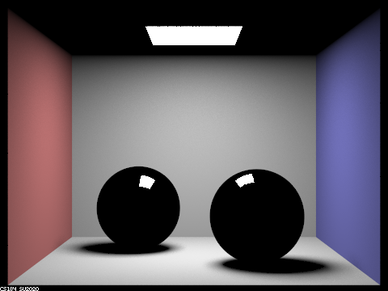ray depth 1
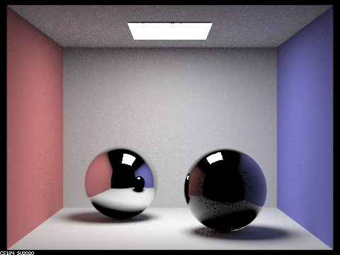ray depth 2
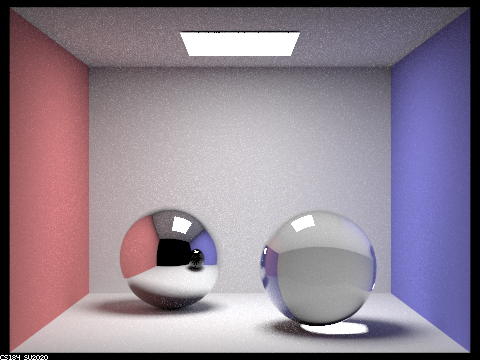ray depth 3
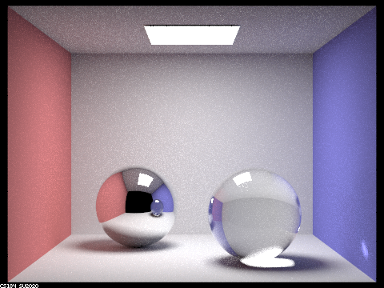ray depth 4

ray depth 5
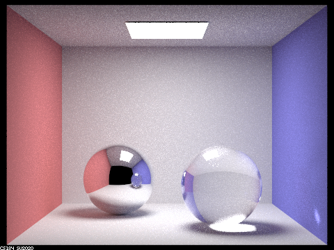ray depth 100
Point out the new multibounce effects that appear in each image.
Your response goes here.
Explain how these bounce numbers relate to the particular effects that appear. Make sure to include all screenshots.
Your response goes here.
Part 2. Microfacet Material
Show a screenshot sequence of 4 images of scene `CBdragon_microfacet_au.dae` rendered with $\alpha$ set to 0.005, 0.05, 0.25 and 0.5. The other settings should be at least 128 samples per pixel and 1 samples per light. The number of bounces should be at least 5. Describe the differences between different images. Note that, to change the $\alpha$, just open the .dae file and search for `microfacet`.
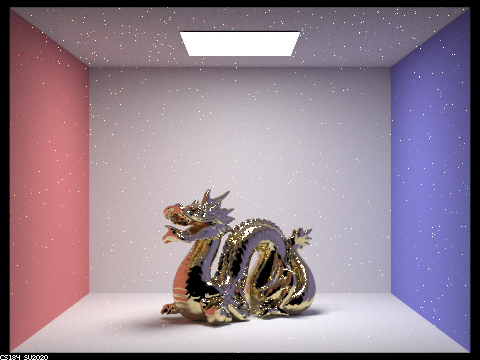alpha = .005
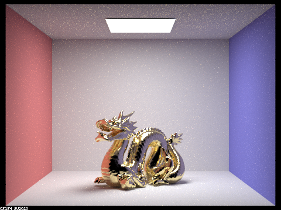
alpha = .05
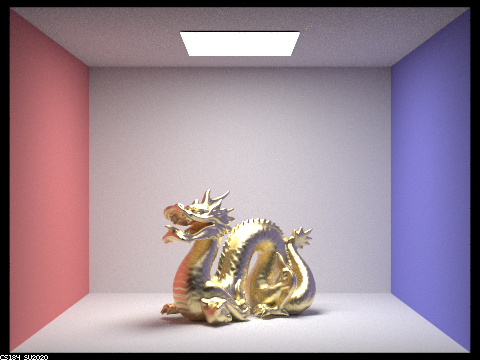
alpha = .25
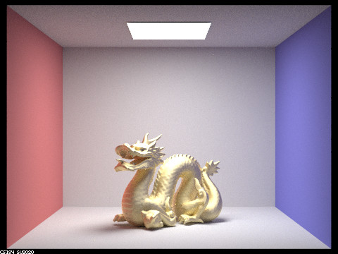
alpha = .5
Show two images of scene `CBbunny_microfacet_cu.dae` rendered using cosine hemisphere sampling (default) and your importance sampling. The sampling rate should be fixed at 64 samples per pixel and 1 samples per light. The number of bounces should be at least 5. Briefly discuss their difference.
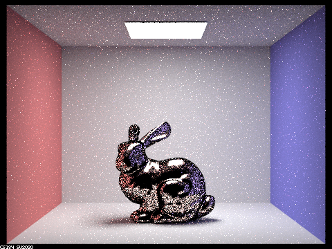cosine hemisphere sampling
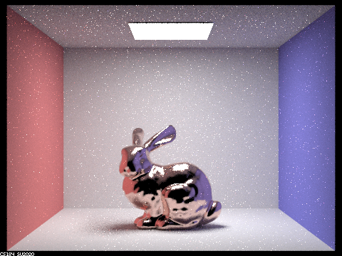
importance sampling
Show at least one image with some other conductor material, replacing `eta` and `k`. Note that you should look up values for real data rather than modifying them arbitrarily. Tell us what kind of material your parameters correspond to.
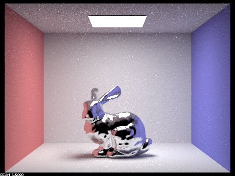Silver bunny!